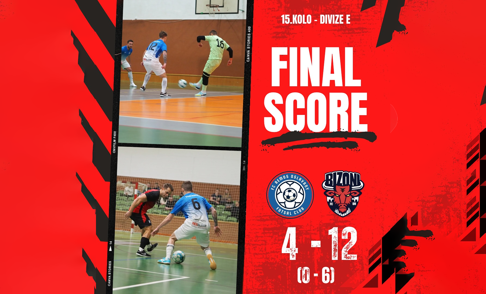

🏆🎉 Jsme mistři! Bizoni ovládli divizi a postupují do 2. ligy! 🎉🏆 Dokázali jsme to! Sezóna plná dřiny, týmového ducha a skvělých výkonů se vyplatila – s předstihem jsme ovládli divizi a máme jistý postup do 2. ligy! 🔥 Navíc jsme zvládli i postup do dalšího kola v rámci Poháru SFČR, což jen potvrzuje, že jdeme správnou cestou. Každý zápas byl výzvou, ale bojovali jsme jako jeden tým a teď slavíme zasloužený úspěch. Děkujeme všem fanouškům, kteří nás podporovali! 💙 Bez vás by to nebylo ono! 🙌 🔥 Přijďte nás podpořit i v dalším utkání! 🔥 📅 Neděle 23. 2. ⏰ 19:00 ⚽ Bizoni vs. SK Amor Kloboučky Vyškov B Těšíme se na vás, přijďte vytvořit skvělou atmosféru! 🙌💙 #JsmeMistři #Postup #2Liga #Bizoni #TýmovýDuch #Futsal #DomácíUtkání Přijdete nás podpořit a oslavit s námi postup do druhé ligy? 🤙
